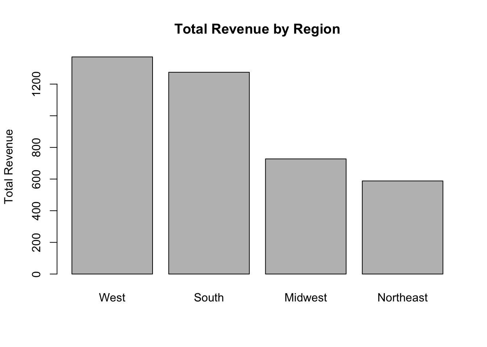
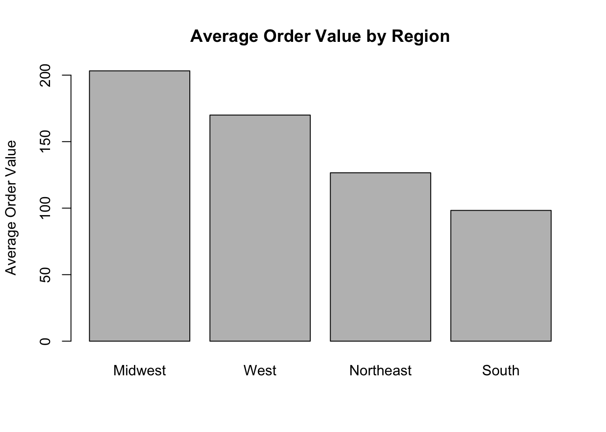

x <- 10
y <- 3
x / y[1] 3.333333By the end of this lab, you should be able to:
echo, eval, include)Note: I’ve shared the Lab 3 RMarkdown file on Brightspace. Please download it, put it in your project folder, and reopen it. You will see details on RMarkdown code format.
R Markdown lets you combine analysis + code + results in one place. Source vs. Visual: in our work, we focus on the Source view rather than the Visual view, and the Visual view is much easier to use than Source.
An .Rmd file has:
---)For example, the Rmarkdown code for this Lab at top,
---
title: "Lab3: Intro to R Markdown and MySQL"
output: html_document
---Markdown text (headings, bullets, math, etc.)
**bold text** → bold text*italic text* → italic text#, ##, ###and comes after the text title- Space and comes after the Bullet point[Website Name](Website Link) such as [RStudio](https://posit.co/) → RStudio such as  → 
Code chunks by using backtick (` is the backtick, which is usually located in the top left corner, directly below the Escape key and above the Tab key, next to the “1” key on the number row.)
For example,
```{r}
# your R code
```x <- 10
y <- 3
x / y[1] 3.333333Chunk options control what is shown when you knit.
This is code in Rmarkdown looks like:
```{r}
mean(c(1, 2, 3, 4, 5))
```This is output in Rmarkdown after Knit:
mean(c(1, 2, 3, 4, 5))[1] 3echo=FALSE) after knittedThis is code in Rmarkdown looks like:
::: {.cell}
::: {.cell-output .cell-output-stdout}
```
[1] 55
```
:::
:::This is output in Rmarkdown after Knit (code is gone, only output):
[1] 55eval=FALSE means do not run)This is code in Rmarkdown looks like:
::: {.cell}
```{.r .cell-code}
# This will appear as code in the report but will NOT run.
install.packages("DBI")
```
:::This is output in Rmarkdown after Knit (only show code and didn’t run code):
# This will appear as code in the report but will NOT run.
install.packages("DBI")include=FALSE)This is code in Rmarkdown looks like:
```{r, include=FALSE}
# Useful for setup steps you don't want printed.
z <- rnorm(5)
```And there are no codes and outputs at all.
SQL (Structured Query Language) is used to interact with databases.
WHERE)SELECT)GROUP BY)JOIN)SELECT columns
FROM table
WHERE conditions
GROUP BY columns
ORDER BY columns;-- Select a few columns
SELECT customer_id, region, revenue
FROM customers;
-- Filter rows
SELECT *
FROM orders
WHERE order_total > 100;
-- Aggregation
SELECT region, AVG(revenue) AS avg_revenue
FROM customers
GROUP BY region;
-- Join
SELECT o.order_id, c.region, o.order_total
FROM orders o
JOIN customers c ON o.customer_id = c.customer_id;To ensure this lab knits immediately, we will create a small database locally using SQLite. The SQL skills are the same, and later you will switch to MySQL with real credentials.
# If you haven't installed these packages before, run these lines ONCE in the Console (MUST IN Console not Rmarkdown):
# install.packages(c("DBI", "RSQLite"))
# the database interface (DBI) defines how R talks to databases, but it does not talk to any database by itself.
library(DBI)
# RSQLite actually knows how to talk to SQLite.
library(RSQLite)# Create an in-memory SQLite database (it exists only while R is running)
# It creates a connection to a temporary SQLite database that exists only in memory, not as a file on disk.
con_sqlite <- dbConnect(RSQLite::SQLite(), ":memory:")
# Create database in R
customers <- data.frame(
customer_id = 1:8,
customer_name = c("Apex Co", "BlueMart", "Cedar LLC", "Delta Inc",
"Eagle Shop", "FreshFoods", "GreenTech", "Harbor Outlet"),
region = c("Northeast", "Northeast", "Midwest", "South",
"South", "West", "West", "Midwest"),
segment = c("B2B","B2C","B2B","B2B","B2C","B2C","B2B","B2C"),
stringsAsFactors = FALSE
)
orders <- data.frame(
order_id = 101:120,
customer_id = sample(1:8, size = 20, replace = TRUE),
order_date = as.Date("2026-01-01") + sample(0:60, size = 20, replace = TRUE),
order_total = round(runif(20, min = 20, max = 350), 2)
)
# Write database from R to SQLite
dbWriteTable(con_sqlite, "customers", customers, overwrite = TRUE)
dbWriteTable(con_sqlite, "orders", orders, overwrite = TRUE)
# Check the database in SQLite's memory
dbListTables(con_sqlite)[1] "customers" "orders" dbReadTable(con_sqlite, "customers") customer_id customer_name region segment
1 1 Apex Co Northeast B2B
2 2 BlueMart Northeast B2C
3 3 Cedar LLC Midwest B2B
4 4 Delta Inc South B2B
5 5 Eagle Shop South B2C
6 6 FreshFoods West B2C
7 7 GreenTech West B2B
8 8 Harbor Outlet Midwest B2CdbReadTable(con_sqlite, "orders")[1:10, ] order_id customer_id order_date order_total
1 101 7 20504 195.01
2 102 7 20454 292.19
3 103 6 20478 250.40
4 104 4 20455 348.36
5 105 2 20505 307.06
6 106 4 20489 30.31
7 107 2 20494 281.22
8 108 7 20493 140.14
9 109 5 20488 302.55
10 110 3 20506 142.36You can send SQL to the database using dbGetQuery().
q1 <- "
SELECT customer_id, customer_name, region
FROM customers
WHERE region = 'West';
"
west_customers <- dbGetQuery(con_sqlite, q1)
west_customers customer_id customer_name region
1 6 FreshFoods West
2 7 GreenTech Westq2 <- "
SELECT c.region,
COUNT(o.order_id) AS num_orders,
ROUND(AVG(o.order_total), 2) AS avg_order,
ROUND(SUM(o.order_total), 2) AS total_revenue
FROM orders o
JOIN customers c ON o.customer_id = c.customer_id
GROUP BY c.region
ORDER BY total_revenue DESC;
"
region_summary <- dbGetQuery(con_sqlite, q2)
region_summary region num_orders avg_order total_revenue
1 West 9 152.42 1371.80
2 South 5 254.97 1274.83
3 Midwest 4 181.89 727.56
4 Northeast 2 294.14 588.28Based on the table above:
Once your SQL results are in R, you can compute summaries and visualize.
summary(region_summary$total_revenue) Min. 1st Qu. Median Mean 3rd Qu. Max.
588.3 692.7 1001.2 990.6 1299.1 1371.8 summary(region_summary$avg_order) Min. 1st Qu. Median Mean 3rd Qu. Max.
152.4 174.5 218.4 220.9 264.8 294.1 barplot(region_summary$total_revenue,
names.arg = region_summary$region,
main = "Total Revenue by Region",
ylab = "Total Revenue")
This section shows how to connect to MySQL. We also had install MySQL in our DANL 330 class, if you didn’t take DANL 330, you could ignore this section, basically Section 3 and Section 6 are same.
# Run once in Console if needed:
install.packages("RMySQL")library(RMySQL)
db_password <- '5459' ## change your own password you had set with MySQL workbench, keep other things same.
db_user <- 'root'
db_name <- 'sql_store'
db_table <- 'customers'
db_host <- '127.0.0.1'
db_port <- 3306
my_connection <- dbConnect(
MySQL(), user= db_user,
password = db_password,
dbname = db_name,
host = db_host,
port = db_port
)dbListTables(my_connection) # this is access all your "sql_store" schema tablesq_mysql <- "
SELECT *
FROM customers;
"
dbGetQuery(my_connection, q_mysql)
# You should be able to see more than 1,000 rows if you completed Lab 15 in DANL 330. If you did not run Lab 15, you will only see a small number of records.dbDisconnect(my_connection)dbDisconnect(con_sqlite)Try these using the SQLite database you created in this lab.
order_total.orders table).DBI::dbGetQuery().# Create an in-memory SQLite database (it exists only while R is running)
con_sqlite <- dbConnect(RSQLite::SQLite(), ":memory:")
customers <- data.frame(
customer_id = 1:8,
customer_name = c("Apex Co", "BlueMart", "Cedar LLC", "Delta Inc",
"Eagle Shop", "FreshFoods", "GreenTech", "Harbor Outlet"),
region = c("Northeast", "Northeast", "Midwest", "South",
"South", "West", "West", "Midwest"),
segment = c("B2B","B2C","B2B","B2B","B2C","B2C","B2B","B2C"),
stringsAsFactors = FALSE
)
orders <- data.frame(
order_id = 101:120,
customer_id = sample(1:8, size = 20, replace = TRUE),
order_date = as.Date("2026-01-01") + sample(0:60, size = 20, replace = TRUE),
order_total = round(runif(20, min = 20, max = 350), 2)
)
dbWriteTable(con_sqlite, "customers", customers, overwrite = TRUE)
dbWriteTable(con_sqlite, "orders", orders, overwrite = TRUE)
dbListTables(con_sqlite)[1] "customers" "orders" q_north <- "
SELECT customer_id, customer_name, region, segment
FROM customers
WHERE region = 'Northeast';
"
northeast_customers <- dbGetQuery(con_sqlite, q_north)
northeast_customers customer_id customer_name region segment
1 1 Apex Co Northeast B2B
2 2 BlueMart Northeast B2Cq_sr <- "
SELECT c.segment,
COUNT(o.order_id) AS num_orders,
ROUND(SUM(o.order_total), 2) AS total_revenue,
ROUND(AVG(o.order_total), 2) AS avg_order
FROM orders o
JOIN customers c ON o.customer_id = c.customer_id
GROUP BY c.segment
ORDER BY total_revenue DESC;
"
segment_revenue <- dbGetQuery(con_sqlite, q_sr)
segment_revenue segment num_orders total_revenue avg_order
1 B2B 14 2146.12 153.29
2 B2C 6 829.07 138.18Interpretation idea:
- total_revenue shows which segment drives more revenue overall
- avg_order shows which segment tends to place larger orders
q_t5 <- "
SELECT order_id, customer_id, order_date, order_total
FROM orders
ORDER BY order_total DESC
LIMIT 5;
"
top5_orders <- dbGetQuery(con_sqlite, q_t5)
top5_orders order_id customer_id order_date order_total
1 119 3 20495 298.11
2 108 7 20468 290.41
3 110 3 20512 283.59
4 104 8 20469 226.07
5 115 1 20456 216.74If you want the customer name included, use a join:
q_t5n <- "
SELECT o.order_id, c.customer_name, c.region, c.segment, o.order_date, o.order_total
FROM orders o
JOIN customers c ON o.customer_id = c.customer_id
ORDER BY o.order_total DESC
LIMIT 5;
"
top5_orders_with_names <- dbGetQuery(con_sqlite, q_t5n)
top5_orders_with_names order_id customer_name region segment order_date order_total
1 119 Cedar LLC Midwest B2B 20495 298.11
2 108 GreenTech West B2B 20468 290.41
3 110 Cedar LLC Midwest B2B 20512 283.59
4 104 Harbor Outlet Midwest B2C 20469 226.07
5 115 Apex Co Northeast B2B 20456 216.74orders_df <- dbReadTable(con_sqlite, "orders")
overall_avg_order <- mean(orders_df$order_total)
overall_avg_order[1] 148.7595(Equivalent SQL approach, optional):
q4_sql <- "
SELECT ROUND(AVG(order_total), 2) AS avg_order_total
FROM orders;
"
dbGetQuery(con_sqlite, q4_sql) avg_order_total
1 148.76First compute average order by region using SQL:
q5 <- "
SELECT c.region,
ROUND(AVG(o.order_total), 2) AS avg_order
FROM orders o
JOIN customers c ON o.customer_id = c.customer_id
GROUP BY c.region
ORDER BY avg_order DESC;
"
avg_order_by_region <- dbGetQuery(con_sqlite, q5)
avg_order_by_region region avg_order
1 Midwest 203.21
2 West 169.98
3 Northeast 126.57
4 South 98.30Now make a bar plot in R:
barplot(avg_order_by_region$avg_order,
names.arg = avg_order_by_region$region,
main = "Average Order Value by Region",
ylab = "Average Order Value")
dbDisconnect(con_sqlite)